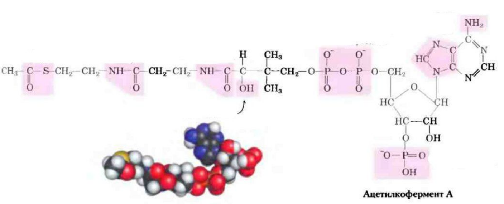
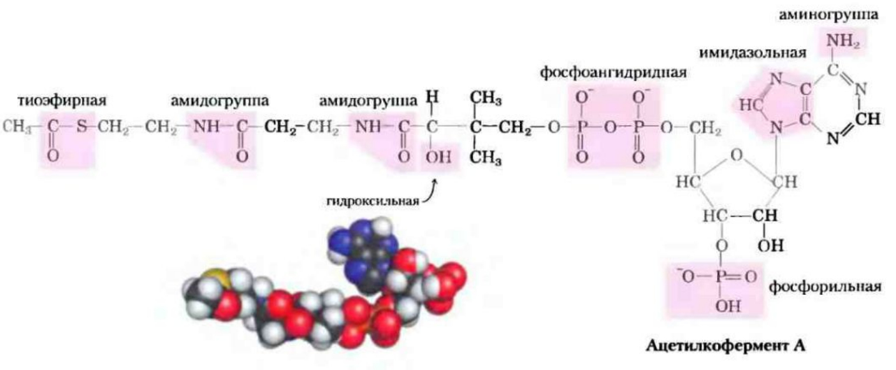
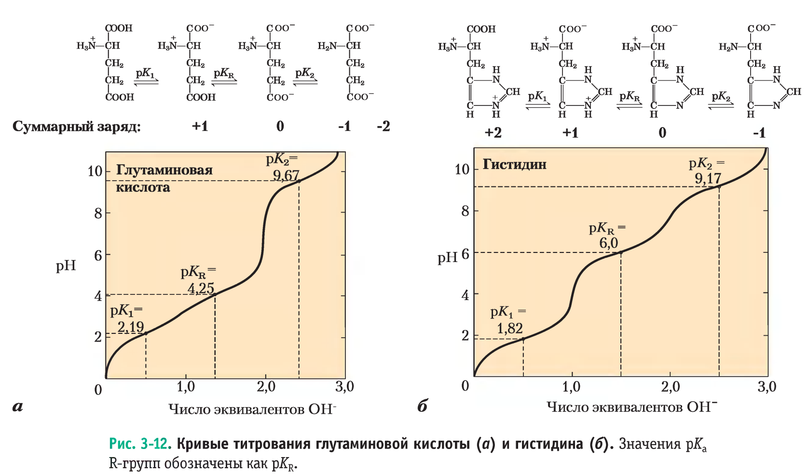
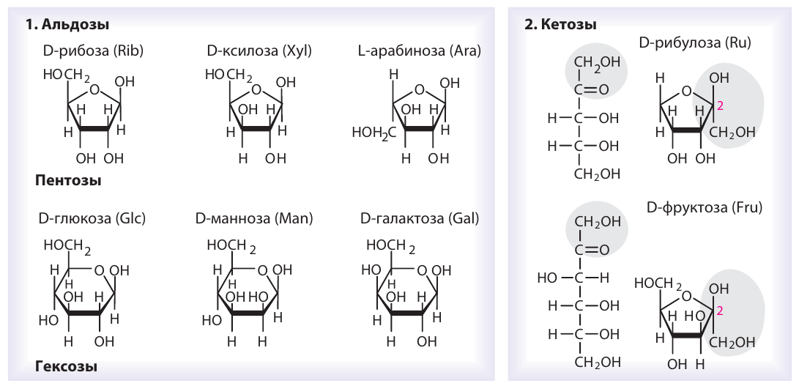
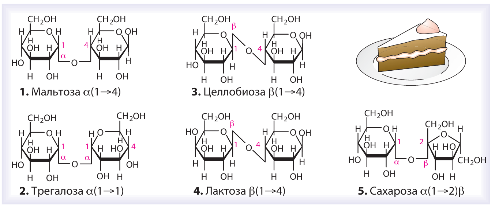
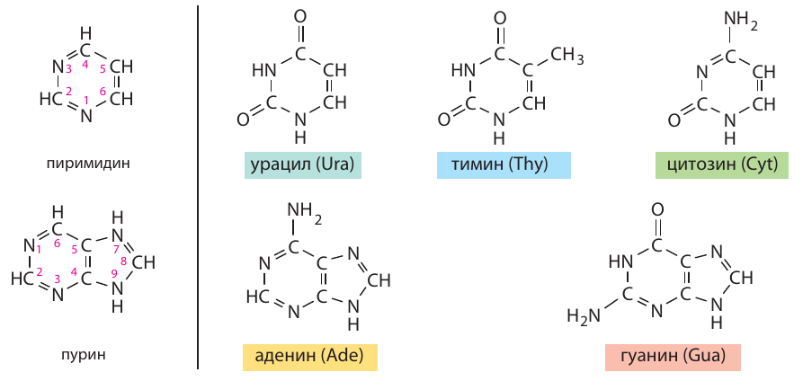
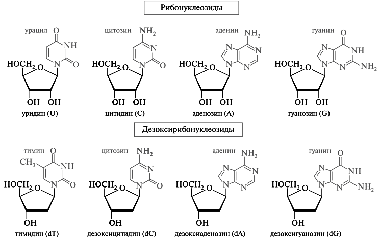
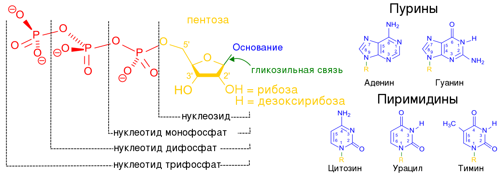
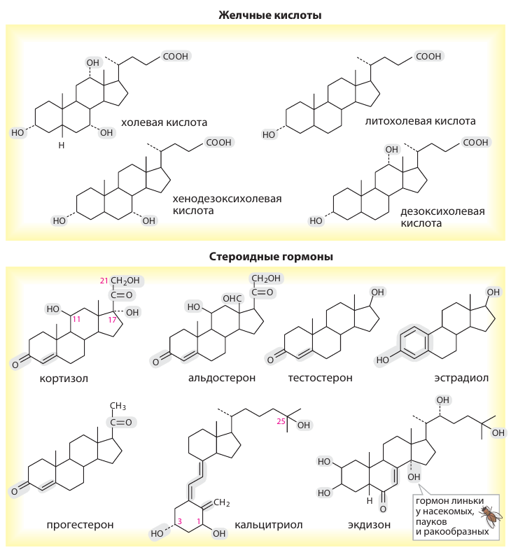

Олимпиадная биология
Биохимия
Лекция04
Углерод
Реакции
Белки
Нуклеотиды
и липиды
и липиды
Олимпиадная биология
Тимофей Рыко
| Вопрос | Подсказка для объяснения |
|---|---|
| Почему O обычно двухвалентен? | Шесть электронов во внешней оболочке |
| Что сохраняет первое начало? | Энергию |
| Когда Qₚ = ΔH? | Постоянное p, закрытая система, только pV-работа |
| Что определяет знак ΔᵣG? | Направление при текущем составе |
| Почему жир объединяется в воде? | Изменяется G всей системы, включая воду |
Биохимия
К органическим относят большинство соединений углерода, но CO₂, карбонаты и ряд других соединений традиционно изучают как неорганические.
Гибридизация описывает электронную структуру и пространственное направление связей.
| Модель | σ-направлений | Геометрия | Пример |
|---|---|---|---|
| \mathrm{sp^3} | 4 | Тетраэдр, ≈109,5° | \ce{CH4} |
| \mathrm{sp^2} | 3 | Плоскость, ≈120° | \ce{H2C=CH2} |
| \mathrm{sp} | 2 | Линия, 180° | \ce{HC#CH} |
Негибридизованные p-орбитали образуют π-связи: одну при sp² и две при sp.
\ce{CH3-CH2-OH}
Спирт: есть группа OH
\ce{CH3-O-CH3}
Простой эфир: O между углеродами
Вокруг обычной одинарной σ-связи возможны разные конформации. Вращение вокруг C=C нарушает боковое π-перекрывание.
Поэтому взаимное положение заместителей у двойной связи устойчиво.
Ферменты и рецепторы сами хиральны: одинаковый состав молекул не гарантирует одинакового действия.
Несовмещаемые зеркальные образы
Стереоизомеры, не являющиеся зеркальными образами
Для n независимых тетраэдрических центров максимум 2^n
Предположим, смесь содержит поровну два энантиомера. Один связывается с мишенью, второй в этих условиях не действует.
Но в реальном организме изомеры могут иметь разные эффекты, превращаться друг в друга и выводиться с разной скоростью.
| Группа | Запись | Что замечать |
|---|---|---|
| Гидроксильная | R–OH | Полярность, H-связи |
| Альдегидная | R–CHO | Концевой карбонил |
| Кетонная | R–CO–R′ | Карбонил внутри цепи |
| Карбоксильная | R–COOH ⇌ R–COO⁻ | Кислотность |
| Простой эфир | R–O–R′ | Кислород между углеродами |
| Сложный эфир | R–CO–O–R′ | Продукт реакции кислоты и спирта |
У одного углеродного скелета разные функциональные группы дают разные свойства.
| Группа | Узнаваемый фрагмент | Пример |
|---|---|---|
| Амино | R–NH₂; R₂NH; R₃N | Может принимать H⁺ |
| Амидная | R–CO–NH–R′ | Пептидная связь |
| Иминная | R₂C=NR′ | Основание Шиффа |
| Гуанидиновая | HN=C(NH₂)–NH–R | Боковая группа аргинина |
| Имидазольная | Пятичленный цикл с двумя N | Боковая группа гистидина |
Амин и амид различаются: карбонил рядом с N заметно меняет его свойства.
| Группа | Запись | Пример |
|---|---|---|
| Тиол | R–SH | Цистеин |
| Дисульфид | R–S–S–R′ | Связь между остатками цистеина |
| Тиоэфир / тиоэстер | R–S–R′ / R–CO–S–R′ | Метионин / ацетил-CoA |
| Фосфомоноэфир | R–O–PO₃²⁻ | Фосфорилированный спирт |
| Фосфодиэфир | R–O–PO₂⁻–O–R′ | Остов нуклеиновых кислот |
| Фосфоангидрид | P–O–P | Между фосфатами ATP |
| Фрагмент | Строение | Что отличает |
|---|---|---|
| Енол | C=C–OH | OH непосредственно при двойной связи |
| Ангидрид карбоновых кислот | R–C(=O)–O–C(=O)–R′ | Два ацильных фрагмента через O |
| Ацилфосфат | R–C(=O)–O–PO₃²⁻ | Смешанный ангидрид карбоновой и фосфорной кислот |
| Преобразование | Что меняется |
|---|---|
| Первичный спирт → альдегид → карбоновая кислота | Последовательное окисление |
| Вторичный спирт → кетон | Окисление |
| Два тиола → дисульфид | Окисление серы |
| Кислота + спирт → сложный эфир + вода | Конденсация |
| Кислота + амин → амид + вода | Формальная конденсация |
| Карбонил + спирт → полуацеталь | Присоединение; важно для сахаров |
Реакционную способность оценивают по электронной плотности и доступным электронным парам.

Найдите тиоэстер, амид, фосфатные группы и гидроксилы.
Найдите знакомые функциональные группы в структуре ацетил-CoA.

Биохимия
Полимеры аминокислот
Полимеры нуклеотидов
Полимеры моносахаридов
Разнообразная группа; в общем случае не полимеры
Целлобиоза состоит из двух остатков глюкозы, соединённых одной гликозидной связью. Какова её молекулярная формула?
| Аминокислота | R-группа | Особенность |
|---|---|---|
| Глицин Gly, G | H | Нет хирального центра |
| Аланин Ala, A | –CH₃ | Неполярная метильная группа |
| Валин Val, V | –CH(CH₃)₂ | Разветвлённая цепь |
| Лейцин Leu, L | –CH₂–CH(CH₃)₂ | Разветвлённая цепь |
| Изолейцин Ile, I | –CH(CH₃)–CH₂–CH₃ | Второй хиральный центр |
| Метионин Met, M | –CH₂–CH₂–S–CH₃ | Тиоэфир |
| Пролин Pro, P | –(CH₂)₃–, замыкается на N | Ограничивает геометрию цепи |
| Аминокислота | Узнаваемая боковая группа |
|---|---|
| Фенилаланин Phe, F | –CH₂–фенил |
| Тирозин Tyr, Y | –CH₂–фенил–OH; гидроксил в пара-положении |
| Триптофан Trp, W | –CH₂–индол (присоединение в положении 3) |
| Серин Ser, S / треонин Thr, T | –CH₂OH / –CH(OH)CH₃ |
| Цистеин Cys, C | –CH₂SH |
| Аспарагин Asn, N / глутамин Gln, Q | –CH₂–CONH₂ / –CH₂–CH₂–CONH₂ |
Классы перекрываются: тирозин ароматический и одновременно содержит полярную OH-группу.
| Аминокислота | R-группа | Около нейтрального pH |
|---|---|---|
| Аспартат Asp, D | –CH₂–COO⁻ | Обычно отрицательная |
| Глутамат Glu, E | –CH₂–CH₂–COO⁻ | Обычно отрицательная |
| Лизин Lys, K | –(CH₂)₄–NH₃⁺ | Обычно положительная |
| Аргинин Arg, R | –(CH₂)₃–NH–C(NH₂)₂⁺ | Обычно положительная |
| Гистидин His, H | –CH₂–имидазол | Соотношение заряженной и незаряженной форм зависит от среды |
Преобладает форма с суммарным зарядом +1
Цвиттерион: положительный и отрицательный заряды в одной молекуле
Преобладает форма с зарядом −1
При pI суммарный заряд равен нулю: положительные и отрицательные заряды цвиттериона компенсируются.

Дополнительная ионизируемая группа добавляет область буферного действия и меняет изоэлектрическую точку.
У внутреннего остатка одна связь образована его аминогруппой, другая — карбоксильной группой.
Пептидная связь — амидная. Полная структура белков будет темой молекулярной биологии.
Две функциональные группы позволяют α-аминокислотам образовывать цепь.
Выберите все верные характеристики аланина. Его боковая группа — CH₃.
б, в, г CH₃ неполярна; α-C хирален; две ионизируемые группы дают две буферные области.
ВсОШ 2024/25 · региональный этап · 9 класс · №30 · формулировки пересказаны
Биохимия
Формула (CH₂O)ₙ описывает состав многих простых сахаров.
Обозначения α и β определяются относительной конфигурацией у аномерного атома.

«Серебряное зеркало» не является надёжным способом отличить глюкозу от фруктозы.
| Сахар | Мономеры | Связь | Восстанавливает |
|---|---|---|---|
| Мальтоза | Glc + Glc | α(1→4) | Да |
| Целлобиоза | Glc + Glc | β(1→4) | Да |
| Лактоза | Gal + Glc | β(1→4) | Да |
| Сахароза | Glc + Fru | α1↔2β | Нет |
| Трегалоза | Glc + Glc | α1↔1α | Нет |
Если связаны оба аномерных центра, свободного полуацетального центра не остаётся.

Сначала найдите аномерный атом, затем номера соединённых атомов и конфигурацию α/β.
| Полимер | Мономер и связь | Ветвление / где |
|---|---|---|
| Амилоза | Glc, α(1→4) | В основном линейная; компонент крахмала |
| Амилопектин | Glc, α(1→4), ветви α(1→6) | Разветвлённый компонент крахмала |
| Гликоген | Glc, α(1→4), ветви α(1→6) | Чаще разветвлён; животные, грибы |
| Парамилон | Glc, β(1→3) | Запас у эвгленовых |
| Инулин | В основном Fru, β(2→1) | Запас у ряда растений |
Тип связи и степень ветвления меняют свойства полимера даже при одинаковом основном мономере.
| Полимер | Строительные блоки | Где важен |
|---|---|---|
| Целлюлоза | Glc, β(1→4) | Клеточная стенка растений |
| Хитин | N-ацетилглюкозамин, β(1→4) | Покровы членистоногих, стенки грибов |
| Муреин | GlcNAc + MurNAc, β(1→4); пептидные сшивки | Стенка бактерий |
| Ксилоглюкан | Glc β(1→4); ксилозные ветви α(1→6) | Гемицеллюлозы растительной стенки |
Человеческие пищеварительные ферменты не гидролизуют β(1→4)-связи целлюлозы.
| Вещество | Состав / свойства | Контекст |
|---|---|---|
| Декстран | Глюкан: преимущественно α(1→6), возможны ветви | Бактериальные внеклеточные полимеры |
| Агароза | D-Gal + 3,6-ангидро-L-Gal; β(1→4) и α(1→3) | Красные водоросли; гели |
| Каррагинаны | Сульфатированные D-галактаны; β(1→4) и α(1→3) | Красные водоросли; гели |
| Арабинаны | L-арабиноза: остов α(1→5), возможны ветви | Растительные пектины |
| Гиалуронан | Глюкуронат + GlcNAc; β(1→3) и β(1→4) | Межклеточный матрикс |
Полисахариды различаются составом мономеров и биологическими функциями.
Повторяющиеся дисахариды с аминосахарами. Многие сульфатированы; гиалуронан — нет
Белок с длинными цепями гликозаминогликанов; углеводная часть обычно велика
Белки с углеводными цепями; доля и строение сахаров варьируют
Гликозидная связь определяется участием аномерного центра сахара.
Есть в гемолимфе многих насекомых; встречается и у растений
Компонент растительных полимеров, в том числе камедей
Образуется при ферментативном расщеплении крахмала
Гидролизует сахарозу до глюкозы и фруктозы; важна при образовании мёда
Фруктоза усваивается; собственных ферментов для гидролиза целлюлозы нет
Симбиотические микроорганизмы расщепляют целлюлозу; продукты их обмена используются животным
Для расчёта нужно знать массу реально усвоенного вещества и энергетический выход на единицу массы.
Масса плода — 3 кг. В модели задачи: вода 80%, фруктоза 5%, целлюлоза 5%; семена 1%, несочная корка 15%.
| Компонент | Данная энергетическая ценность |
|---|---|
| Фруктоза | 400 ккал / 100 г |
| Целлюлоза | 450 ккал / 100 г |
Сколько энергии получат человек и корова?
Расчётные допущения ключа: человек ест только мякоть; корова — всё, кроме семян. Доли 5% применяются к соответствующей съеденной массе.
«Ломоносов» 2018/19 · заключительный этап · 9 класс · №9 · условие сокращено
Человек: считаем фруктозу из мякоти. Корова: в принятой модели считаем и фруктозу, и целлюлозу из всей массы без семян.
Расчёт по опубликованному ключу
Итог зависит от допущений задачи: химическая теплота сгорания и реальная усвояемая энергия не тождественны.
Биохимия

A, G, C, T или U
Рибоза или дезоксирибоза
N-гликозидная связь
Аденин и рибоза образуют аденозин — нуклеозид.


Рибофлавин → добавление фосфата → FMN. Флавиновая часть участвует в окислительно-восстановительных превращениях.
FMN — фосфорилированный рибофлавин.
Биохимия
Многие плохо растворимы в воде и хорошо — в подходящих органических растворителях
Есть полностью гидрофобные и амфифильные представители
Запас энергии, мембраны, сигналы и защитные покрытия
Пчелиный воск — смесь веществ, включающая сложные эфиры.
Карбоксильная группа и углеводородный хвост
| Кислота | Обозначение | Двойные связи |
|---|---|---|
| Пальмитиновая | 16:0 | Нет |
| Стеариновая | 18:0 | Нет |
| Олеиновая | 18:1 Δ9 | Обычно cis |
| Линолевая | 18:2 Δ9,12 | Обычно cis |
| α-Линоленовая | 18:3 Δ9,12,15 | Обычно cis |
| Арахидоновая | 20:4 Δ5,8,11,14 | Обычно cis |
Триацилглицериды почти не смешиваются с водой и хранятся в липидных каплях.
Содержат связанные остатки жирных кислот; эфирные связи легко омыляются щёлочью
Не содержат таких гидролизуемых ацильных связей, например свободные стероиды
У сфинголипидов жирная кислота связана амидно: для её гидролиза нужны более жёсткие условия, чем для обычного эфира.
Нужно узнавать фосфатидилхолин, фосфатидилэтаноламин и фосфатидилинозитол.
| Липид | Что присоединено к фосфату | Что узнаём |
|---|---|---|
| Фосфатидилхолин | Холин | Четвертичный аммоний |
| Фосфатидилэтаноламин | Этаноламин | Протонированная аминогруппа |
| Фосфатидилинозитол | Инозитол | Цикл с несколькими OH |
| Фосфатидилсерин | Серин | Аминокислотный остаток |
| Кардиолипин | Два фосфатидных фрагмента связаны глицерином | Четыре ацильных хвоста |
Изменение головки меняет заряд и взаимодействия мембранного липида.
Длинноцепочечный аминоспирт
Жирная кислота связана с N амидной связью
Добавлена полярная головка
Стероидные гормоны, желчные кислоты и производные витамина D связаны общим биосинтетическим происхождением.

Производные стероидов выполняют разные функции: от гормональной регуляции до участия в пищеварении.
Создаёт много небольших растворимых молекул: осмотический вклад обычно растёт
Молекулы уходят из водной фазы в агрегат: вклад мал по сравнению с раствором мономеров
Удаление ионов или летучих молекул уменьшает число частиц в растворе
Сравниваем при одинаковой температуре и учитываем, где именно находятся частицы — в растворе или отдельной фазе.
Выберите процессы, которые уменьшают осмотическое давление клеточного раствора в модели задания.
б, в, д Олеосомы — липидные капли. Пункт б предполагает уход продукта из водной фазы; одной летучести недостаточно.
ВсОШ 2020/21 · региональный этап · 10–11 класс · II–8 · формулировки сокращены
Биохимия
Восковой эфир. Липид: длинные цепи и сложная эфирная связь
Биохимия
Полифенолоксидаза катализирует окисление фенольных веществ с участием кислорода
Фермент и часть его субстратов пространственно разделены
Контакт с кислородом и разрушение клеток позволяют окислять фенольные вещества
Возникают хиноны и затем тёмные продукты
Электроны и группы
Связи, вода, заряды
ΔG и равновесие
Синтез, запас, сигнал
Сначала читаем структуру, затем условия и механизм — и только после этого предсказываем поведение молекулы.
Повторяющиеся слайды «вопрос → ответ» объединены в шаги. Неточные формулировки исходников исправлены; карта переноса лежит рядом с HTML.
Из исходной подборки: «Основы биохимии Ленинджера», разделы об углеводах, нуклеотидах и липидах; «Наглядная биохимия». Номера глав зависят от издания.